RK3588 Android开发答疑¶
忠实整理讲稿 · 原视频 P1 · 00:00–61:14.666 · 视频来源 保留讲者的顺序、理由、例子与限定。原片 720×360，投屏较口述滞后，配图链接使用画面实际源时间；未辨词与口述/画面差异在邻近整理注中说明。
00:00 今天的直播安排与多路解码算力¶
我今天直播的主要内容，就是给大家介绍一下我们 RK3588 的一些参数。相信大家在参数上都已经很熟了，有一些是我们通过实测得到的数据，我这里再给大家介绍一下。还有 RK3588 的主要使用场景。
另外介绍一下 RK3588 的开发，最基础的就是在 Android 上面创建一个自己的产品 lunch，还有部分 DTS 的介绍。这两部分可能是大家在开发时用得比较多的。另外，我会介绍 RK3588 的启动流程，通过一个 RK3588 的启动 log，跟大家一起分析。最后，我们会留一部分时间进行现场答疑。大家在直播过程中有问题，都可以在留言区回复，我们的工作人员会记录，后面统一解答。
好，现在开始第一部分：介绍一下 RK3588 的主要实测参数。首先，大家主要关注的是多路编解码。RK3588 支持的 H.264 硬件算力，可以达到每秒 7680 × 4320 × 30 帧，这是每秒的算力。换算成 1080P、30 帧的话，就是——
02:01 多路解码与编码的实测条件¶
差不多 16 路，也就是可以同时支持 16 路 1080P、30 帧的解码。这 16 路，是按照 14 兆码率的片源实际测试的；片源码率是 14 兆。如果码率不一样，支持的最大路数也会不一样，还可能更多。
下面这个，比如 H.264、1.3 兆码率，最大可以支持到 24 路同时解码；H.264、9.8 兆码率，最大可以支持到 17 路；H.265、4 兆码率，可以支持到 46 路；H.265、11 兆码率，可以支持到 31 路解码。
整理注：本段转写中的“24 路”与投屏表格“21 路”不一致。投屏条件写为 Android 12.0、DDR 2113M；1.3M 片源对应 21 路。保留这处差异，不能把口述和表格静默合成一个数字。
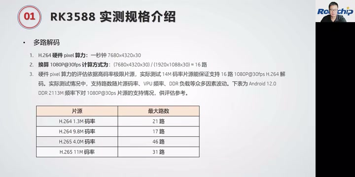
多路解码实测页：Android 12.0、DDR 2113M 下，不同码率片源对应的最大路数。表格 1.3M 行显示 21 路。 · 原片 03:00
这些测试是在 DDR 最高频率下测的。CPU 消耗不大，主要是 DDR；我们测试时 DDR 跑在 2113 兆。
多路编码的话，H.264、1080P、30 帧、4 兆码率，最大可以支持 11 路；H.264、1080P、30 帧、10 兆，最多支持 7 路同时编码。编码测试因为输入无法保证为 DMA buffer，大部分情况下，还是要拷贝一次再送 VPU。这里再说一下：编码测试的输入无法保证为 DMA buffer，大部分情况下需要拷贝一次送 VPU，因此多路编解码的实际路数，会小于上述按硬件像素算力换算的路数。
04:02 编码数据与七路异显¶
刚刚说的是我们实测的数据。在 RK3588、Android 12、YUV420 的情况下，H.264、1080P、4 兆码率最大支持 11 路，10 兆码率支持 7 路。
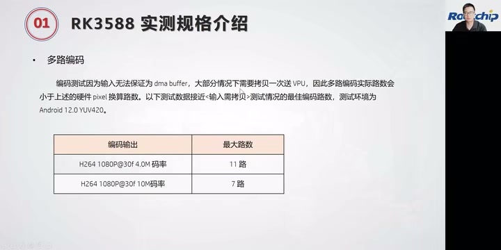
多路编码表：H.264 1080P@30fps，4.0M 为 11 路、10M 为 7 路；测试环境 Android 12.0 YUV420。 · 原片 04:42
然后是多屏异显。大家知道 RK3588 在显示部分非常强大，最多可以支持 7 路异显。我们的 VOP 支持 Split 模式，可以把左右半屏的数据，同时输出到同一类型的两个显示接口上。可以看这个图：这是一个 VOP 输出，比如这里的长和宽，是两倍的宽；通过 VOP 的 Split 模式分屏，可以把它分成两个，对半分，把这两部分分别送到我们的显示接口，比如 DP0、DP1，或者 MIPI0、MIPI1，送到同一个类型。但是，这个屏的类型要是同一种类型的两个显示接口。
利用 RK3588 的 VOP Split 模式，最多可以支持七屏异显。这边就是我们七屏异显的一个连接方案。
整理注：317–347 秒原转写出现机械重复，正文按该区段局部恢复转写补回；DP0/DP1 及后文 HDMI/eDP 等接口同时参照画面确认。
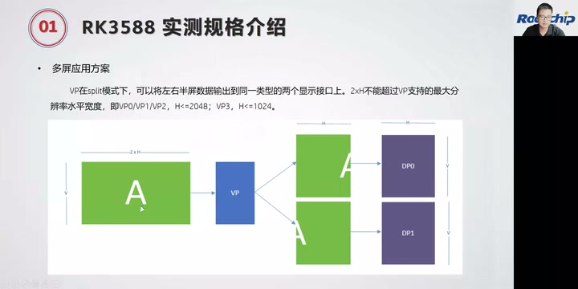
VP 的 Split 模式示意：左右半屏分别输出到同类型两个显示接口，画面示例为 DP0、DP1。 · 原片 05:42
我们 VP0、VP1 这两路，VP0 接两路 1080P，通过 Split 模式，分别输出给两个 HDMI 或者两个 eDP。那 VP1 呢——
06:03 七屏接口分配与 USB/Type-C 注意事项¶
也是通过 Split 模式，可以同时输出两路 1080P 数据，分别接到两个 DP。VP2 也是两路 1080P，分别送给两路 MIPI。VP3 接一路 1080P，它可以输出到的接口是 BT1120 和 BT656，这样就组成一个七屏异显。
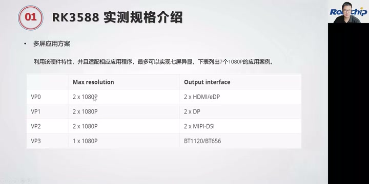
七路 1080P 异显分配：VP0 对应 HDMI/eDP，VP1 对应 DP，VP2 对应 MIPI-DSI，VP3 对应 BT1120/BT656。 · 原片 06:42
另外是 USB 部分。RK3588 的 USB 有一些注意事项，在这里给大家介绍一下。RK3588 有两路 Type-C 接口，我们一般称为 Type-C0 和 Type-C1。RK3588S 只有一路 Type-C，也就是只有 Type-C0，没有 Type-C1。Type-C0 和 Type-C1 都是 OTG 口，都能够支持 device 和 host 的功能。但是只有 Type-C0 支持固件烧写，所以大家做硬件设计时，固件烧写接口一定要用 Type-C0 来做。优先选用 Type-C0：如果你只想要一个 Type-C，就优先用 Type-C0 作为 OTG 口。
第二个是 Type-C 支持 USB 3.0、DP、PD 充电等多个功能。如果只需要 USB 3.0 或 DP 单独某一个功能，接口就可以根据用户需求，设计成任意形式。如果需要组合功能，一般会设计成 Type-C 标准接口的形式。而且 Type-C 要接一个外挂的 CC 芯片，目前我们支持的 CC 芯片有 FUSB302 和 HUSB311。
08:04 Type-C 功能组合与 USB 接口拆分¶
这是我们目前调过的 CC 芯片。如果要 PD 快充，还是要外挂一个充电 IC。
Type-C 口可以支持以下几种功能组合：USB 2.0 OTG、USB 3.0 OTG、DP、USB 2.0 OTG 加上 4 lane 的 DP，或者 USB 3.0 OTG 再加上 2 lane 的 DP，这是它的组合。
RK3588 有一个和 PCIe、SATA 复用的 USB 3.0 接口。这个接口只有 USB 3.0 的功能，所以一般不单独使用，一般跟另外一个 USB 2.0 口组成一个完整的 3.0 接口。大家一定要注意：这个跟 PCIe 和 SATA 复用的 USB 3 接口，只有 USB 3.0 的功能。
一个 USB 3.0 接口作为 host 时，可以拆分成 2.0 和 3.0 部分，分别接一个 U2 和 U3 设备，也就是 USB 2.0 和 USB 3.0 设备。但是不能把一个 USB 3.0 拆分出来的 2.0 部分和 3.0 部分，一个用作 device，一个用作 host。要么两个都是 device，要么都是 host，不能分别一个 host、一个 device。
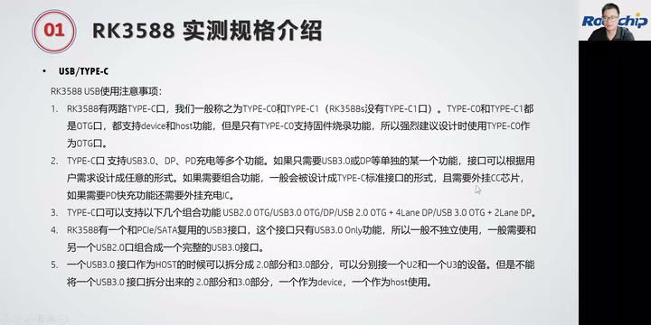
USB/Type-C 使用注意事项，包含 OTG、功能组合、PCIe/SATA 复用 USB 3.0 及 host 拆分约束。 · 原片 08:44
再看 USB 3.0 的最大传输速率。这是我们测出的数据。USB 3.1 接口，时钟是 5G，理论值可以达到 500 兆，我们实测是 385 兆。
10:08 USB、PCIe、SATA 传输速率与测试限制¶
USB 2.0 的 clock 是 480 兆，理论速度可以达到 60 兆，但是实测是 37 兆。
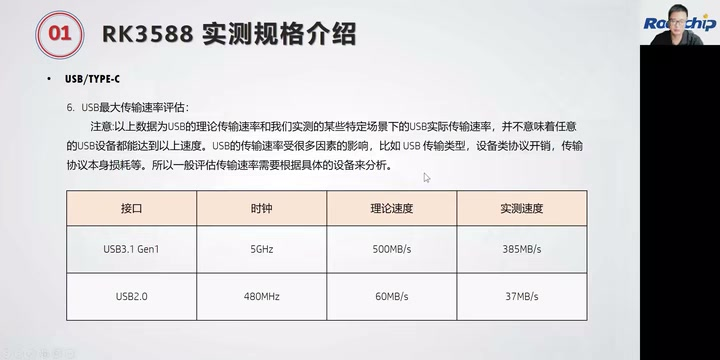
USB 实测速率页：USB 3.1 Gen1 为 385MB/s，USB 2.0 为 37MB/s，并提醒测试依赖设备及传输场景。 · 原片 11:24
整理注：上文速率数字对应投屏的 USB 3.1 Gen1 理论 500MB/s、实测 385MB/s；USB 2.0 理论 60MB/s、实测 37MB/s。冻结转写将口述单位识别成“兆 bit”，此处展示原投屏单位供核对。
以上数据是我们在特定场景下实测的 USB 实际传输速率，并不意味着任意 USB 设备都能达到以上速率。USB 传输速度受到很多因素影响，比如 USB 传输类型、设备协议开销、传输协议本身的损耗等等。所以一般评估传输速率，需要根据具体设备分析。我们这边是在我们的 EVB 板上测试的。
另外是 PCIe 和 SATA。PCIe 的最大传输速率，理论值可以达到 3.8G，我们实测是 3G。PCIe 2.0 的时钟是 5G，理论速率可以达到 500 兆，实测达到 380 兆。SATA 3.0 的时钟是 6G，理论速度可以达到 600 兆，实际测试速率达到 550 兆每秒。
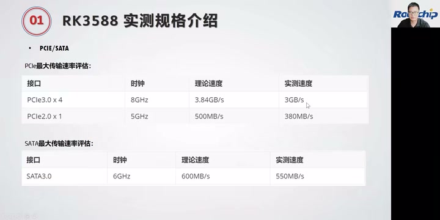
PCIe/SATA 传输速率表，显示接口代次、lane 数、时钟及理论和实测速度。 · 原片 12:04
整理注：投屏逐项标为 PCIe 3.0 ×4、8GHz、理论 3.84GB/s、实测 3GB/s；PCIe 2.0 ×1、5GHz、理论 500MB/s、实测 380MB/s；SATA 3.0、6GHz、理论 600MB/s、实测 550MB/s。保留讲者的概数，并列投屏准确写法，不把冻结转写中的 bit 当作图表单位。
RK3588 的 camera 部分，接口有两个 ISP，还有 MIPI CSI，还有 DVP。然后我们 RK3588 最大——
12:10 Camera 数量、像素与七路典型接法¶
RK3588 最多可以支持 7 个 camera。RK3588S 会少一点，最多可以支持 5 个 camera。
这里列到了 RK3588S 和 RK3588：最大可以支持一个 48 兆，也就是 4800 万像素的 camera，这里是 15 帧。如果是 3200 万像素，帧率可以到 30 帧。还可以同时支持两个 1600 万像素、30 帧的 camera，以及 4 个 800 万像素、30 帧。RK3588S 最大可以支持 5 个 4 兆，也就是 400 万像素、30 帧的 camera 数据处理；RK3588 最多可以支持 7 个 400 万像素、30 帧的 camera。
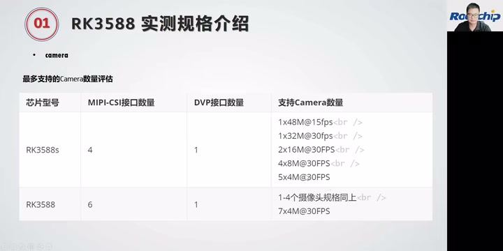
Camera 支持表：RK3588S 的 4 路 MIPI-CSI 加 1 路 DVP，RK3588 的 6 路 MIPI-CSI 加 1 路 DVP，以及对应像素和帧率组合。 · 原片 13:09
这是 RK3588 的 7 个 camera 的一个典型接法。我们有 camera0、camera1、camera2、camera3、camera4、camera5，这 6 个是 MIPI camera，再加一个 DVP camera，就是从 rkcif 这条通路过来，组成 7 路 camera。这是每一路 camera 的通路。
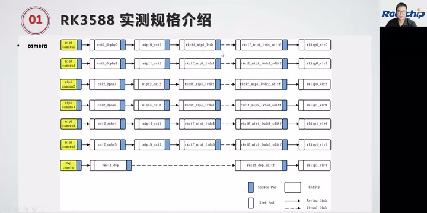
七路 Camera 典型连接：上方六路 MIPI 摄像头与下方一路 DVP 摄像头，各自经过对应的软件通路。 · 原片 14:45
软件 DTS 配置就以这些名字来配，这里是 CSI D-PHY、CSI，还有 rkcif，就按照这个通路来配。我们 DTS 里提供了对应的参考配置。
整理注：此处节点缩写原转写不清，依据画面确认 CSI/D-PHY、rkcif；图中文字较小，具体 DTS 节点全名应参看源图及对应 SDK，不把模糊缩写补造成一份可执行配置。
上面讲的，是我们常用的 RK3588 一些性能的实测数据。
14:22 八大使用场景与 Android SDK 的 lunch¶
RK3588 主要有这八大使用场景。一个是平板，RK3588、RK3588S 作为消费类平板；另外是 ARM PC、智慧大屏，像一体机、最近比较火的教学一体机；还有多目摄像头、高性能的边缘计算、智能 NVR，还有 VR 和 AR 产品，以及智能座舱。智能座舱，也就是车载部分，是我们重点在推的一个产品线。
八大适用场景页：高性能平板、ARM PC、智慧大屏、多目摄像头、边缘计算、智能 NVR、VR/AR、智能座舱。 · 原片 15:33
以上简单介绍了 RK3588。下面给大家介绍一下我们 RK3588 Android SDK 开发的一些东西。
首先介绍一下 Android 上 device 下面的 lunch，以及如何新建自己的产品。这里看一下 Android 上 device 的结构、device 的一些说明，以及如何新建自己的产品目录，也就是添加一个新的 lunch。
RK3588 Android SDK 在编译时，需要先 lunch，选择产品。lunch 会根据不同产品配置对应参数。所以大家做自己的产品开发，最好新建一个自己的产品目录，也就是自己的 lunch。这样就可以用一套代码开发不同产品，然后——
16:25 device 分层和各类产品目录¶
产品上面的差异，都在自己的产品 device 下面做一些差异化配置。
这里介绍一下 RK3588 的 device 结构。通用部分，device/rockchip/common 是 Rockchip 平台的一些通用配置。device/rockchip/rk3588 里面，是 RK3588 芯片平台的配置，可以配置芯片信息，以及芯片特有的一些模块。
下面是具体产品。这里区分了 RK3588 和 RK3588S。一个主要是我们的 EVB 板，大家可以用这个产品去做行业应用类的产品。另外一个主要给 RK3588S 的平板类产品，或者一些带电池的设备。rk3588-box 主要是电视类产品；rk3588-XR 主要是 RK3588S 的 AR、VR 产品。
讲者打开 Android 12 的 device 结构文章，展示通用平台、RK3588 芯片平台及多个产品目录的继承关系。 · 原片 17:36
整理注：原转写将几个产品目录的 s、下划线、连字符混识，源画面又只有 720×360，图中最小的后缀不足以逐字可靠辨认。这里保留讲者对 EVB/行业、平板/电池、box、XR 的用途说明；实际新建目录时，以当时 SDK 目录为准，不把模糊后缀当作可复制命令。
再介绍一下 Rockchip Android 平台通用配置，主要在 common 下面。这里面有一个编译脚本，在 build 下面，是我们编译、打包用的脚本。大家编译时，可以用 build.sh 来编译，里面集成了一些编译命令，可以实现一键编译。这是我们推荐的编译方式：用这个脚本来编。
18:26 通用配置、芯片配置与 kernel 版本¶
这里面还包含一些 fstab，就是分区表的一些信息、工具。我们的分区表都是自动生成的，parameter_tools，parameter 就是分区表；配置或者它自动生成的编译，都在这里面。
然后是一些 init 服务，我们 RK 平台的服务都在这里面，这是 init.rc。还有 sepolicy，是权限部分的一些配置。
device.mk 主要是平台相关配置，比如编译选项，在这里可以控制编译哪个模块、编译哪些 app 等。BoardConfig.mk 是平台默认的一些产品属性配置，以及平台功能的一些宏定义，都在这里面配置。
Rockchip Android 平台通用配置页面，包含编译工具、init、sepolicy、device.mk 和 BoardConfig.mk 的说明。 · 原片 19:24
RK3588 芯片平台，也就是 RK3588 特有的配置，在 device/rockchip/rk3588 里面。这里会配置芯片的信息：这是 ARM64、ARMv8 架构，支持 64 位和 32 位，然后配置 Mali，以及 kernel 版本。
RK3588 芯片平台配置代码示例；源视频分辨率限制了细小代码与版本值的辨读。 · 原片 20:24
为什么这里配置一个 kernel 版本？因为 Android 12 支持一些老芯片和新芯片。比如老芯片 356X、3326、3399，这些都有升级到 Android 12；我们的 RK3588 也是 Android 12，但是它们的 kernel 版本不一样。目前，除了 RK3588 用的版本以外，其他都使用 4.19，所以这里做一些区分。
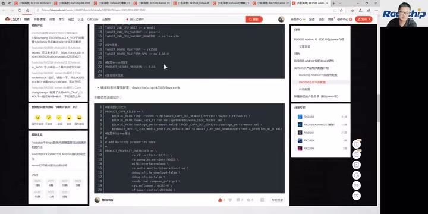
芯片 BoardConfig 代码的 kernel 配置行，现场页面显示 PRODUCT_KERNEL_VERSION := 5.10。 · 原片 21:04
整理注：1215–1217 秒冻结转写和局部恢复转写均识别为“5.0”，口述识别存在歧义；滞后显示的代码行 PRODUCT_KERNEL_VERSION := 5.10 给出配置示例的版本。保留 Android 12、老芯片例子及其他平台使用 4.19 的讲述口径，区分口述识别与屏幕配置证据。
还有，这里是一些——
20:29 文件拷贝、产品级配置与新建 lunch¶
RK3588 的 device.mk 里面会做一些文件拷贝。大家编译时要拷贝一些配置文件，可以在这里做拷贝，还有系统属性这些。
这些产品目录下面，还会区分每个子产品的目录，比如 RK3588、RK3588S、box、VR。下面就是每个产品具体的配置信息，是产品级配置。这里的 BoardConfig 也是产品信息，比如你要不要 A/B，还有 sensor，以及配置是否支持 USB Camera，这些都在这里配置。
产品级 BoardConfig 配置示例，涉及产品功能开关；源分辨率下最小字段不宜直接抄录为可执行配置。 · 原片 22:16
下面介绍一下如何新建自己的 lunch。新建 lunch 其实很简单，先看你的产品类型。如果你是平板类型、消费电子类型、带电池的设备，就直接把对应 RK3588S 平板产品的目录复制一份，再重命名为你自己产品的名字。并且，把这个目录下面所有原产品的字段，全部替换成你自己的产品字段，就可以了。这就是新建 lunch 的介绍。
新建产品 lunch 的页面：复制参考产品目录、重命名，并替换原产品字段。 · 原片 22:52
整理注：源转写的目录后缀不稳定，截图保留现场目录与替换示例；这里只按可确定的产品类型与操作步骤整理。sensor 由相邻 BoardConfig 的多项传感器功能开关校读。
下面再介绍一下 RK3588 开发的 DTS。首先介绍 DTS 架构。大家开发过程中用得比较多的，就是 DTS 配置。我们的 RK3588 DTS 架构是这样子的——
22:31 DTS 的芯片层、EVB 层与系统层¶
这是一个架构图。这里是 RK3588、RK3588S，我们的核心是 RK3588S。大家知道 RK3588 和 RK3588S 的功能差不多，只是 RK3588 比 RK3588S 的功能多一些。所以，rk3588s.dtsi 配置 RK3588 和 RK3588S 公共的芯片信息；rk3588.dtsi 配置 RK3588 相较于 RK3588S 差异的信息。这两个都是芯片级配置。
我们这里的 EVB 板，rk3588-evb.dtsi 放的是 EVB 的配置。因为内部做了好几款 EVB，功能大致一样，但会有一点差异。我们要验证不同模块，所以做了不同板子；每个板子重点验证的模块不一样。所以，会把 EVB 板子的公共部分，都放到 rk3588-evb.dtsi 里面。
下面是 EVB1 这块具体板子。RK3588 EVB1 就是我们公开售卖的 RK3588 EVB 板。大家如果拿到这个板子，可以看到用到的 DTSI 就是这里这个；具体用到的 DTS 在下面。
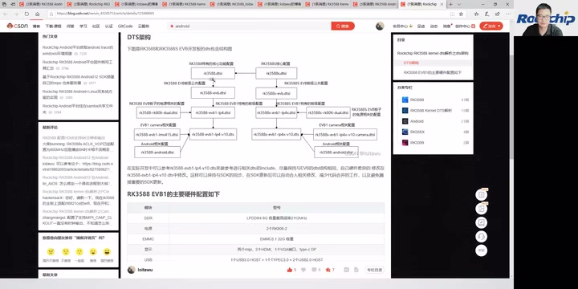
DTS 架构图，展示 RK3588S 公共芯片层、RK3588 差异层、EVB 公共层、具体板级及 Android/Linux 分支。 · 原片 24:16
因为要兼容 Android 和 Linux，它们有一些配置不一样。核心部分都在 DTSI 这里。默认没有后缀的是 Android；如果是 Linux，这里会带一个 linux。
整理注：架构图中的板级文件名还带板号、版本等后缀，源图细字有限。上文保留芯片公共层、差异层、EVB 公共层、具体板级与系统级的解释，不凭模糊图像补写完整板级文件名。
24:31 Camera、Android 和电源配置的包含关系¶
这个 DTS 里面，会包含 EVB1 的 camera 配置 DTSI。Android 相关配置是 rk3588-android.dtsi，这是跟 Linux 的差别。
这里还有一个比较重要的 rk3588-rk806-dual.dtsi，是电源部分的相关配置。如果你的硬件设计都是参考我们的硬件设计，这部分基本不用改，这部分基本不用改。我后面也会给大家讲电源部分要怎么配。
我们的电源方案有两种：一种用两个 RK806，称为双 PMIC 方案；另外一种用一个 RK806，再加三个 RK860 的 DC/DC，称为单 PMIC 方案。这两个配置有一点不一样，所以大家硬件设计时，要看清楚用的是单 PMIC 还是双 PMIC。
整理注：本段 DC/DC 的 RK860 型号在转写中缺少可核定的后缀，先保留识别出的型号范围，后续按讲者展开的电源配置核对；不把它扩写成未经辨清的具体器件料号。
这边是 RK3588S 的 DTS 架构，它其实跟 RK3588 一样。大家实际开发时，可以参考我们的 RK3588 EVB1。建议直接 include 这个 DTSI：如果你们的参考设计跟我们的 EVB 板差不多，就直接包含 EVB1 的参考 DTSI，然后把这里改成你们自己的 DTS，把差异部分放到自己的 DTS 里面修改。
整理注：本段口述的 EVB1 Camera 配置与板级 DTSI 完整文件名，冻结转写存在字符错识，现场架构图见前图，保留包含关系与修改步骤，不把不清的板号/版本后缀当作确切路径。
26:31 为什么继承参考 DTSI，以及 EVB1 硬件配置¶
这样，在我们进行代码更新时，你们比较容易更新到我们 DTS 部分的修改，不会把我们的 DTS 修改漏掉。
这是 RK3588 EVB1 的硬件配置：用的是 LPDDR4、8G 的 DDR，最高频率是 2112 兆；用双 PMIC，两个 RK806；32G eMMC。显示接口有两个 MIPI、两个 HDMI，一个 VGA，还有一个 Type-C 的 DP。
USB 部分，有一个 USB 3.0 host，加一个 Type-C 3.0，另外加两个 USB 2.0 host。还有一个 SATA 接口、一个 HDMI RX。camera 有两个 4 lane 的 MIPI D-PHY TX；以太网是一个 RJ45，加一个 PCIe 的 RJ45，一个 PCIe 接口的。
RK3588 EVB1 主要硬件配置表，列出 DDR、双 PMIC、eMMC、显示、USB、SATA、HDMI RX、Camera 和以太网。 · 原片 28:19
整理注：硬件介绍保留讲者当时的接口与方向口径；MIPI D-PHY TX 由现场硬件配置表所示，不能按摄像头方向常识静默改成 RX。RJ45 的第二路为 PCIe 扩展，以现场表格为核对依据。
这就是开发板的 DTS 架构。下面再介绍怎么建自己的 DTS。建议大家根据自己的硬件设计，直接复制一份我们现有的 DTS。我们的开发板是 EVB1，前面已经介绍了：如果你的硬件配置跟 EVB1 类似，用的是双 PMIC，我建议就参考这个 RK3588 EVB1 的 DTS。那我们现在主要的参考设计——
28:34 单 PMIC 的 IoT 参考设计¶
我们现在主推的都是单 PMIC。你们拿到的应该是这个硬件参考设计，它是单 PMIC，对应软件 DTS 配置是 rk3588-evb7-lp4-v10 这个参考 DTS，跟我们发布的 RK3588-IoT 参考设计相匹配。如果你的硬件按我们的参考设计来做，开发时就以这个为基础。
它主要是单 PMIC：一个 RK806，加三个 RK860 DC/DC。DDR 是 LP4、200 球。然后是一个 Type-C 加一个 USB 3.0、两个 USB 2.0，以及一个 SATA 3.0 接口。两个 HDMI 2.1 TX、一个 HDMI 2.0 RX，还有 VGA，以及 SDIO 的 Wi-Fi。
我们的 EVB1，Wi-Fi 用的是 PCIe 接口的 Wi-Fi 6；EVB7 用的是 SDIO 接口。另外还有一个 4 lane 的标准 PCIe 3.0 接口、两个 4 lane 的 MIPI CSI 接口，也就是两个 4 lane 的 MIPI D-PHY RX，接 camera；还有一个 4 lane 的 MIPI D-PHY TX，是接屏的。
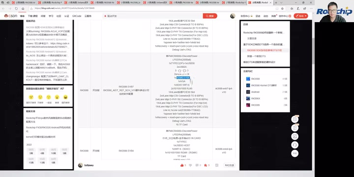
参考 DTS 选择表中的 RK3588 EVB7 / RK3588-IoT 参考设计，展示单 PMIC、LPDDR4 与接口组合。 · 原片 31:10
整理注：此段接口缩写多处被识别成“SPMI”“私人的米P”等，按现场参考设计表及“camera/屏”的连续讲解校读 HDMI、4 lane、MIPI D-PHY。原段对 RX/TX 出现回绕，正文保留先 camera、后屏的顺序；细小 DTS 完整后缀见截图，不把不清字段变成复制命令。
30:37 其他参考 DTS：早期 EVB、NVR 和平板¶
Codec 用的是 ES8388。我们这里还有电源灯这些，另外是按键。
整理注：电源灯一词依据 1800–1860 秒局部恢复转写校读，修复原转写“楼一炮电灯”。恢复尾部出现与课程无关的字幕署名幻觉，不作为讲述内容。
这是我们的参考 DTS。EVB4 这个 DTS 也是单 PMIC，是比较早发布的一个 DTS。有些同学开发时可能参考的是这个 DTS，这个也是单 PMIC，也是可以的。EVB2 这块板子，目前没有在售卖。
NVR 的话，参考 DTS 是 rk3588-nvr-demo-v10，这个 DTS 是 NVR 的一款。
RK3588S 的开发板用的是 RK3588S EVB1。这也是我们公开售卖的 RK3588S EVB，屏用的是 eDP，也是双 PMIC。屏是 eDP，其他配置跟 RK3588 的 EVB 一样，这里还有一个 CAN 接口。
整理注：RK3588S、eDP、双 PMIC、比较 RK3588 EVB，以及 CAN 接口，依据 1900–1940 秒局部恢复转写校读；原转写 cam/camera 片段按补证确认为 CAN 接口。
然后这个是平板的 rk3588s-tablet-v10。平板是双 PMIC，而且带电池。如果你有带电池的产品，可以参考这个 DTS，这个是双 PMIC；后面 V11 是单 PMIC，V11 这个是单 PMIC。
32:39 在自己的 DTS 中改硬件差异¶
其他部分跟 V10 一样，只有 PMIC、电源部分不一样。所以大家选择时，可以根据自己的硬件设计，选择对应的参考 DTS。
新建 DTS，可以直接 include 我们的 DTSI。比如你要参考我们 EVB1、LP4 的 DTSI，就直接 include。在这里 include 你要参考的 DTS，还有 camera 部分、Android 的配置，这些是要 include 的。
然后根据自己板子的硬件差异，在自己的 DTS 里面修改。比如可以改一下背光 GPIO，因为可能用得不一样。还有触摸屏，如果你的触摸屏不一样，可以把我们 EVB 的触摸屏 disable 掉，再在自己的 DTS 添加自己的触摸屏配置。这就是新建一个 DTS。
新板 DTS 的差异修改示例：背光 GPIO 配置以及 disable 原触摸屏节点。 · 原片 35:01
整理注：示例板级 DTSI 的完整版本后缀在冻结转写中不稳定，截图显示其 include 结构。保留“参考板级 / camera / Android 配置 + 自己修改差异”的操作次序，不凭缩写拼造文件路径。
这里再给大家介绍电源部分。主要就是单 PMIC 和双 PMIC，我们现在主推的都是单 PMIC。单 PMIC 方案，一个 RK806 加三个 RK860 DC/DC；双 PMIC 是两个 RK806。
34:40 单双 PMIC 不兼容与 U-Boot 保护¶
单 PMIC 和双 PMIC 在软件上不兼容，大家开发时要注意：软件配置要跟你的硬件设计一致，否则会起不来。
因为这两个相互不兼容，固件如果烧错，有可能损坏芯片。所以为了保护，我们在 U-Boot 阶段做了一个拦截：会检测你当前是双 PMIC 还是单 PMIC。如果配置错，就会打印这个 log，不让你启动，开机失败。大家如果看到这个 log，就去检查是不是 PMIC，也就是电源部分的单双 PMIC 配置错了。
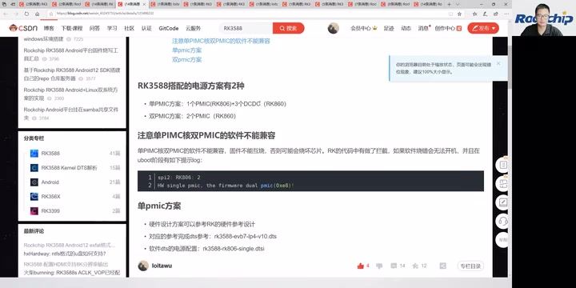
单双 PMIC 不兼容说明及 U-Boot 阶段保护日志；下方列出单 PMIC 的参考 DTS 与 single 电源 DTSI。 · 原片 36:25
屏幕日志示例为 spi2: RK806: 2，以及 HW single pmic, the firmware dual pmic(0x8)!。
单 PMIC 的话，我们在 DTS 里面 include 的是 rk3588-rk806-single.dtsi，电源部分配置都在这里。另外，还要配置一下 DC/DC 的配置。
这里上面的接口配置，原局部音频转写对 SPI 与 I²C 缩写识别不稳定；现场代码显示，PMIC RK806 在 SPI2 上，外接 DC/DC 在 I²C 节点下，相关配置写在 DTS 里面。这三个 DC/DC 分别给 CPU big0、CPU big1，还有 NPU 供电。CPU big1 就是 CPU 6 和 7，另一路给 NPU 供电；这里用到了 RK860-2、RK860-3。
整理注：2163 秒起原转写出现 DCDC 机械回环。已比较 2140–2215、2153–2185 的恢复转写及独立 small 转写，恢复了接口配置、DTS 和 CPU big0 供电的意思；具体 SPI/I²C 缩写依据实际代码核对，不把不清的一句伪装成准确引语。CPU big0 后面的具体核号口述未可靠恢复；截图注释指向 CPU4–5，属于图像证据。CPU big1 的 6、7 及 NPU 供电由较长恢复片段明确提供。原 RK806-2/3 的错识按图中 DC/DC 型号 RK860-2/3 校读。
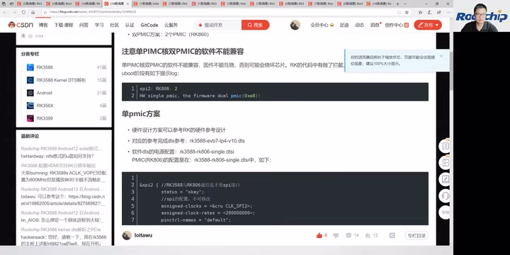
单 PMIC 方案的电源 DTSI 与 SPI2 配置代码开始部分。 · 原片 36:43
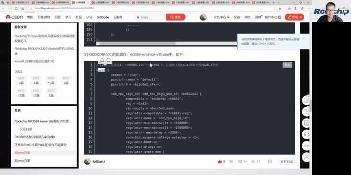
三个 DC/DC 的配置示例：I²C 节点下的 RK860-2、RK860-3；当前代码显示 CPU big0，图注标出 CPU4–5 和 CPU6–7 的供电分配。 · 原片 38:18
36:42 I²C 地址、外部供电和频点检查¶
我们把另外一路用 RK860-3，主要差别是 I²C 地址不一样，其他都是一样的。因为同一条 I²C 下面，不能挂两个 I²C 地址一样的器件，所以用了两个不同 I²C 地址的版本。
整理注：冻结转写在上一窗末尾和本窗开头将 DC/DC 型号识别为 RK806-2 / RK806-3；现场 DC/DC 代码显示 RK860-2、RK860-3。这里区分 SPI 上的 RK806 PMIC 与 I²C 上的 RK860 DC/DC，上一窗已经结合局部恢复与图中注释保留电源分配；CPU big0 核号的来源限制见上一窗整理注。
另外是外部电源配置。外部电源，是指 PMIC 依赖的电源。在 DTS 配置时，这些电源的配置要在 PMIC 配置前面，这样开机时才能正常初始化。也就是说，我们 PMIC 的电源依赖于外部电源，比如 VCC 12V、VCC 5V，这些都要在比较前面初始化。
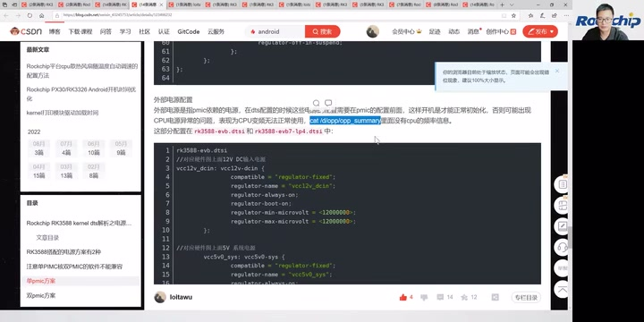
外部电源配置说明，包含先于 PMIC 初始化的依赖关系、opp_summary 检查提示和 VCC12V/VCC5V 的示例。 · 原片 40:18
如果这些电源初始化有异常，CPU、GPU、NPU 这些可能都会有异常。我们可以通过 cat /d/opp/opp_summary，来看相关 CPU、GPU、DDR、NPU 的频点有没有出来。如果没出来，可能就是电源配置或者初始化有问题。
双 PMIC 的话，它的电源配置在 rk3588-rk806-dual.dtsi 配置文件里，这是电源部分比较容易出错的地方。
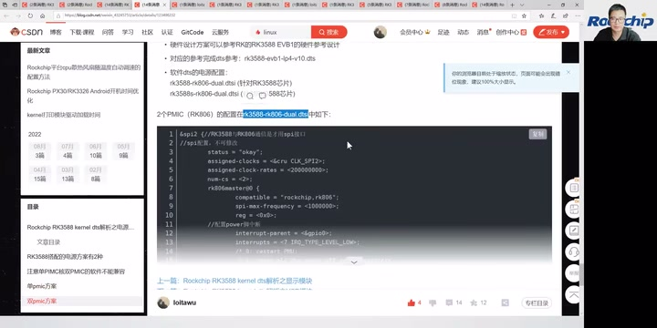
双 PMIC 配置页，明确显示 rk3588-rk806-dual.dtsi 及 SPI 上 RK806 的配置。 · 原片 40:46
整理注：2306–2309 秒原转写出现机械碎词，局部恢复仍未可靠识别后缀；完整文件名由随后可读的双 PMIC 配置页确认为 dual，并非依据“干6”等 ASR 字符猜写。
38:43 从启动 log 看 DDR 与 SPL¶
这是我们 DTS 的介绍。下面再介绍 RK3588 的启动流程，看一下开机 log，根据 log 来分析启动流程。
这是一份 RK3588 的开机 log。首先，开机的第一条是 DDR，也就是我们最先启动的是 DDR。这里能看到 DDR 的软件版本，这个是 1.07。大家看版本时，可以看到 DDR 的版本。
DDR 初始化 log：V1.07、LPDDR4X、4通道每通道2GB，以及528/1068/1560/2112MHz四个频点。 · 原片 42:06
DDR 对应的文件，在我们代码的 rkbin 下面，bin 目录的 RK3588 DDR 文件；跑的就是这一段。屏幕给出的文件为 rkbin/bin/rk35/rk3588_ddr_lp4_2112MHz_lp5_2736MHz_v1.07.bin。下面是 DDR 初始化，能看到 DDR 类型和最高频率。DDR 是 4 个通道，每个通道 2G，这是 8G 容量。它支持 4 个频点，它支持 4 个频点：528、1068、1560，最高 2112。到这里，DDR 初始化结束。
DDR 初始化结束、DDR 跑完，就跑 SPL。SPL 在我们的 loader 里面，这里是它对应的代码、bin 文件以及源文件位置，屏幕对应 rkbin/bin/rk35/rk3588_spl_v1.11.bin。这里能看到 SPL 版本。SPL 只跑小核，大核没有跑。所以在开机 log 的时候，我们看到这两个 log——
整理注：本视频中投屏落后于口述，配图采用实际 log 出现的源时间。画面显示 LPDDR4X、2112MHz、DDR 版本 V1.07，以及 528/1068/1560/2112MHz 四频点。文件版本后缀还包含频率及多平台信息，不凭模糊转写拼造可复制路径。
40:43 启动介质优先级与加载 U-Boot、Trust¶
这两条 Failed to set cpu01、Failed to set cpu23 的 log，大家可以忽略。芯片启动时，先从 SPI 存储里面查找固件。如果那里没有固件，就跳到下一级，也就是 SD 卡，再从 SD 卡查找固件。引导的最高优先级是 SPI，然后是 SD 卡，SD 卡之后才从 eMMC 里面加载。也就是说，如果你插了 SD 卡，而且 SD 卡有固件，就优先从 SD 卡启动。
这些在 log 里都能看出来。这里没有接 SD 卡，所以 SD 卡初始化报错；前面都没有找到，就开始从 eMMC 加载固件。这里的 MMC 就是 eMMC。
SPL 正常的小核阶段提示，以及 SPI、SD 卡查询与 SD 卡未插入的初始化错误。 · 原片 43:06
整理注：开头一句冻结及恢复转写均为“可以不用忽略这个 log”，口语有歧义；结合前句只运行小核与画面明确标注“正常的log”，正文按可忽略这些正常提示整理。口述 SPI 类型在原转写中不清，局部恢复的发音近 SPI NOR；现场页面注释写“查询 SPI nand”，并有
unknown raw ID、unrecognized JEDEC id bytes等日志。不能把不清的口述直接扩成唯一确定的 NOR 或 NAND 类型，优先级按可确定的 SPI → SD → eMMC 保留。
最开始加载的是 U-Boot 下面的 ATF，也就是我们的 Trust，然后是 U-Boot、FDT，以及 ATF 的各段代码，还有 OP-TEE。屏幕顺序列出 atf-1、uboot、fdt、atf-2、atf-3、atf-4、optee。这是最前面加载的。加载完，跳到 U-Boot。这里是 U-Boot 前面这段的启动耗时。
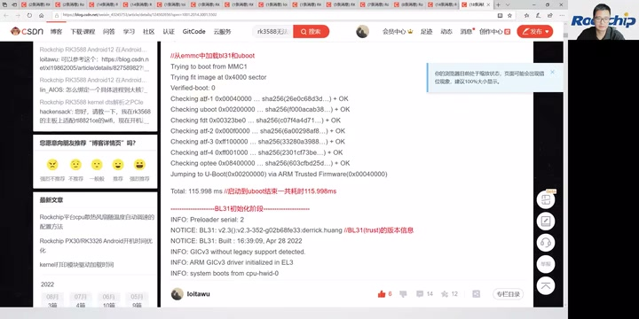
eMMC 加载和校验各阶段代码，随后跳转 ARM Trusted Firmware；页面显示前段总耗时115.998ms。 · 原片 44:30
跳转后，最先启动的是 BL31。BL31 就是我们的 Trust。如果以前做过我们 RK 平台，其他旧平台会有一个 trust.img；RK3588 没有 trust.img——
42:44 BL31、BL32、U-Boot 版本与 PMIC 检查¶
这些都包含在 U-Boot 里面。这里能看到 BL31 的版本，大家核对时可以看这个版本。版本里面带有 commit 信息，主要根据这个 commit 信息来确认版本。
BL31（Trust）初始化与版本信息，包含commit标识；下方开始展示DDR变频信息。 · 原片 44:42
这里是 BL31 里面 DDR 变频，主要是 DDR 变频部分。下面是 BL32 初始化。BL32 主要就是 OP-TEE，这里可以看到 BL32 的信息。BL32 初始化完成，就到 U-Boot 阶段，这里可以看到 U-Boot 版本以及编译信息。
U-Boot 版本、model、内存容量与 eMMC HS200 启动介质日志 · 原片 46:08
这里是 DTS 配置的 model，可以确认你的 DTS 是不是对的。这里还能看到内存容量，是 8G。启动是从 eMMC 启动，eMMC 在 U-Boot 这段跑的是 HS200。
boot mode 是启动模式，normal 或者 recovery。如果第一次开机，这里也会显示 recovery。
U-Boot 里面会初始化 PMIC，就是我们前面说的 PMIC。如果这里 PMIC 配置错了，就会打印这一段 log；看到这段，就去检查是不是单双 PMIC 配置错了。最终它会卡在这里，不继续往下走。
44:45 PMIC 电压检查、显示与加载 kernel¶
原视频：本段 44:44
如果配置正确，就继续往下走。这里是双 PMIC，可以看到输出电压都是 0.75V，电压都是 0.75V；如果不是 0.75V，可能就有异常。
然后是单 PMIC。单 PMIC 会先初始化三个 DC/DC，这三个 DC/DC 这里都是 0.85V。如果没有看到这个 0.85V，说明有问题，要检查 DC/DC 的硬件有没有贴错、料有没有用错，或者通信异常。然后是单 PMIC 的 RK806 初始化。到这里，PMIC 初始化结束。
单 PMIC 的外部 DC/DC 与 RK806 电压日志 · 原片 47:56
整理注：本段口述转写为三个 DC/DC“0.85V”，后续实际日志图写的是
vdd_cpu_big0_s0 800000 uV、vdd_cpu_big1_s0 800000 uV、vdd_npu_s0 800000 uV，即图像示例为 0.8V；保留这处口述识别与屏幕差异，不合并成唯一数字。投屏比口述滞后，配图保留实际出现时间。
这里会显示 DTS 的名称，根据这个可以判断加载的 DTS 是不是对的。这还是在 U-Boot 阶段。下面是 U-Boot 的显示部分，最后 logo 出来，然后是 clock 的一些初始化。
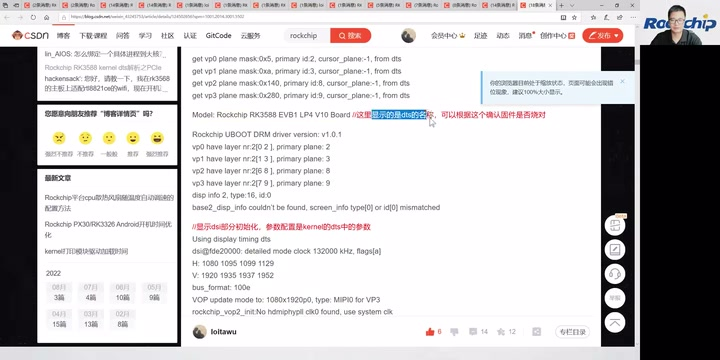
U-Boot 显示部分与 DTS model 日志 · 原片 48:20
这是 Android 固件的加载、AVB 校验，校验固件的合法性。如果开了 AVB，就会进行 AVB 部分的校验，校验下一级。
Android 固件 AVB 校验日志 · 原片 48:44
然后到这里，开始加载 kernel，进行 kernel 固件加载、kernel 启动。
这里显示 U-Boot 阶段的耗时。如果耗时太大，大于几秒，说明 U-Boot 阶段耗时比较长。正常我们 EVB 的耗时在一秒以内。
U-Boot 总耗时 861.280ms 与 kernel 启动编译信息 · 原片 49:08
下面就是 kernel 启动阶段。U-Boot 启动完，就到 kernel，这里是 kernel 的一些编译信息。
46:46 kernel 的电源初始化顺序¶
原视频：本段 46:45
可以通过版本、时间，确认编译时间、编译信息、版本对不对。这里是 DTS 名字，下面是内存初始化，reserved memory，这里是预留的内存。再下面是 CPU 的加载、初始化，以及其他初始化。
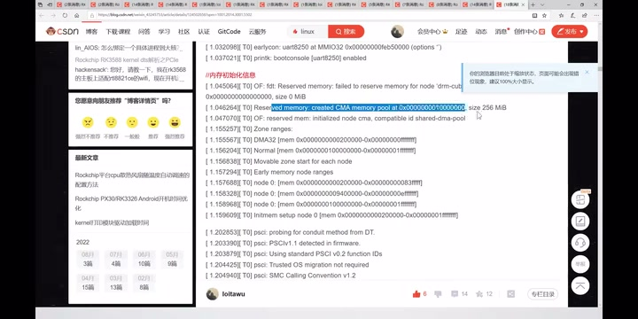
kernel 编译信息与 reserved memory 初始化 · 原片 49:44
各路电源的初始化在这里进行，是 kernel 阶段 PMIC 各路电源的初始化。如果在这里没看到初始化，电源初始化是在 CPU 变频之后才开始，就会有问题。PMIC 初始化太晚，会导致 CPU 那些初始化异常。所以要检查前面讲的 DTS 配置，把电源部分提前。
kernel 阶段 PMIC 各路供电初始化 · 原片 50:20
这是 CPU 变频的部分，这一步要在电源初始化之后。这个是 DDR 变频的一些初始化。
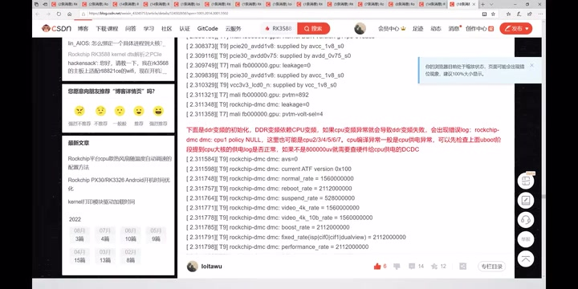
DDR 变频相关初始化与频率日志 · 原片 51:08
到这里，就开始 Android 分区的加载。这大概就是 kernel 进入 Android 的过程，开机流程就是这样。
进入 Android 的分区挂载日志 · 原片 51:20
上面给大家介绍了一些 Android 开发的东西。接下来是现场答疑，大家有问题可以提，我会针对刚刚留言区的一些问题进行回答。
48:46 现场答疑：CPU、显示、Camera 与动态调压¶
原视频：本段 48:45
我们来看一下大家的问题。低一档的 CPU 方案，比 RK3588 低的就是 RK3399；RK3399 再下面是〔型号未辨清〕，然后有 RK3568、RK3566，再下面就是〔型号音近“RK336”，未辨清〕，〔随后一处音近“比较30”，未辨清〕，就这样子。
整理注：2937–2958 秒的芯片型号阶梯，冻结转写含“RK32588”“RK3256”“比较30”等不可靠片段。局部恢复仍识别为“RK388”“RK336”“比较30”，未可靠恢复。本段保留可辨型号、未辨槽位与讲述次序，未辨清的具体型号仍须核听，不据常见产品线补造一条准确排序。
RK3588 支持 4K。它的 HDMI 最高可以支持 8K、60 帧显示；DP 最高支持 8K、30 帧；eDP 可以支持到 6K——4K、60 帧；MIPI 最大也是 4K、60 帧。
整理注：eDP 处先有“6K”的口述识别，紧接着是“4K60帧”，正文保留后一句的数值并注明该回绕。3001–3006 秒 Camera 支持问题原转写为“Caml支持RA2”，局部恢复仍为“ro2”，音近 RAW/RAW2，缩写未可靠辨清，回答为可以支持，不能将 RA2 擅自解释成具体格式或接口。
Camera 支持吗？可以支持，Camera 可以支持〔问题中的具体缩写未辨清〕。
“PMIC RK806 也是带内核动态调压吗？低功耗模式下，双 PMIC 是不是更有优势？”RK806 在 kernel 下面可以支持动态调压，通过 SPI 接口通信。现在为什么推出单 PMIC？我们认为单 PMIC 的功耗会更好一点，而且成本也会更低一点。
50:46 单 PMIC、博客、DDR 兼容与 U-Boot 裁剪¶
原视频：本段 50:46
所以后面我们主推的都是单 PMIC，不是双 PMIC。我们再看下面的问题。
我的博客链接，大家可以在网上搜一下，就是我刚刚放的那个。我给大家看一下这个链接，把这个博客……可以直接在网上搜 RK3588，就可以看到我的，点进来就能看到。
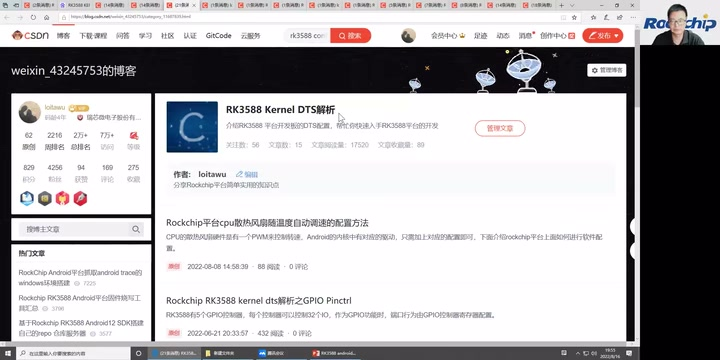
讲者演示搜索后进入 RK3588 Kernel DTS 解析博客栏目 · 原片 55:56
DDR 会兼容一些不同容量的。我们在网上会更新 DDR 的注意事项和支持列表，大家可以通过支持列表去获取。
整理注：3130 秒附近“低调”根据连续的“容量、注意事项、支持列表”校读为 DDR；本段口述未给出可可靠抄录的支持列表网址，截图保留博客查找演示，不增补外部地址。
U-Boot 阶段，我们现在的启动时间差不多一秒以内。如果想更快，可以做一些裁剪，也可以再快一点点。但是，一秒以内的时间再继续缩，优化程度也不会很高，你再优化一点时间——
整理注：末句的具体毫秒数原转写为“几多秒”，不能确定，正文不确定具体数量，只保留继续缩短时间的意思，接下一段“意义也不大”。
52:47 Android 开机、RKNN 与音频 3A¶
原视频：本段 52:46
意义也不大。但是，如果做裁剪，也可以再进行裁剪、再进行优化。RK3588 的 Android 12 开机速度，我们目前差不多在 12 秒左右。大家看一下，还有什么问题，可以现场再给大家解答。
“Android 有提供 AI 算法的 demo 吗？”我们有 NPU 的 RKNN 开发包，SDK 里面也有带。大家如果有兴趣，可以拿去看我们的 NPU RKNN 开发包。
“RK3588 的 3A 算法有支持吗？”3A 算法我们也有支持。如果有兴趣，可以通过我们的 Redmine 提问，我们会指派给对应工程师解答。因为 3A 这一块跟硬件的耦合性比较高，要针对你们的硬件做对应适配。所以，各位需要跟我们的业务，或者通过 Redmine 跟我们沟通，我们再以 case by case 的方式来支持。这指的是音频的 3A 算法。
整理注：工单渠道在原转写中为“日卖/的卖”，按连续提问、指派工程师的语境校读为 Redmine，未得到画面文字确认；不扩写成具体网址。
54:47 ISP 出图、异常掉电与数据保护¶
原视频：本段 54:46
“RK3588 ISP 到出图需要多长时间？”这个时间差不多 150 毫秒左右。RK3588 ISP 到出图的时间，差不多是 150 毫秒左右。
我们前面通过问卷调查收集了一些问题，看看里面主要的问题。比如，有客户提到异常掉电的场景：设备不带电池，关机时直接掉电，容易产生数据丢失，导致无法开机。
针对这个，只能说尽量避免、尽量减少发生概率。一些措施是：能尽量不用磁盘加密，就把磁盘加密关掉；文件系统用〔名称音近“EXT”，未辨清〕；另外，主要是应用开发上要做好数据保护。一些关键数据，要做好及时的回写。就是应用开发上要做一下保护。这是前面收集的问题。
整理注：此处磁盘加密、回写按连续语境校读；文件系统名在冻结及3320–3380秒恢复转写中均音近“一叉击式”，仍未辨清，不能直接确定为 ext4。尚无画面展示这些设置，应按原音复核未辨术语，不能把本段讲者的降低概率建议写成消除掉电风险的保证。
大家看，如果没有什么问题，今天直播就到这里。我们左上角还有一个……那我们看现场，这里还有一个问题：“擦除 flash，有什么方式进 loader 模式？”
56:50 擦除 flash、Maskrom、速率与货源¶
原视频：本段 56:49
擦除 flash 完，flash 里面就没有固件了，这时没办法进 loader。因为 loader 在 U-Boot 里面，你把代码都擦掉了，就没办法进，只能进 Maskrom。擦掉之后直接插进去，就是 Maskrom 模式。Maskrom 下面也可以进行固件烧写，但是要完整烧写。
大家还有问题可以继续，我看还有很多问题。
这里有客户问“3.0”的测试速率最高能达到多少。你指的是 PCIe 3.0 的测试速率吗？如果是 PCIe，我上面已经讲过理论数据和实测数据，大家可以回放看前面的介绍。
“RK3588 现在货源稳定吗？”货源部分，我们现在已经量产，这个可以咨询对应业务。货源肯定是有保障的，RK3588 现在是我们主推的高端芯片。
“RK3588S 平板的关机电流大概是多少？”关机漏电流大约在 50mA 左右。
整理注：50mA 为冻结转写和 3510–3585 秒独立局部恢复转写共同识别的讲者口径；现场没有电流测量画面或单位文字，本稿保留来源，不依据常识静默改成 µA，也不把该数值当作独立验证的硬件指标。
58:50 Maskrom 烧写、DDR 频率、发热与待机 GPIO¶
原视频：本段 58:49
“Maskrom 烧写失败。”Maskrom 烧写失败，要先检查板子的硬件是不是有问题。一般在 Maskrom 下面，如果硬件没问题，烧写是不会失败的，除非硬件有问题。
整理注：3530–3557 秒冻结转写被大量“RK353/关机电流”机械重复污染，以上根据 3510–3585 秒局部恢复补回问题和回答，未把重复识别当成讲者反复强调。这里是讲者对烧写失败的回答口径，未替他补加未讲的排查条件。
“RK3588 LPDDR4 支持的最高频率是多少？”最高频率可以达到 2112 兆，前面讲过，最高支持 2112 兆。LPDDR5 最高可以支持到——2.7G。
整理注：LPDDR5 处原转写经历“2”“262.7”“2.7兆2.7G”的回绕，保留最后的 2.7G 口述概数；前面 DDR bin 文件名出现
lp5_2736MHz是另一处屏幕证据，不用它覆盖本句说法。
“RK3528 的发热情况怎么样？”我们目前看来还好。跑安兔兔的时候，测到芯片端的最高温度，差不多都维持在 50 度以下。就是跑安兔兔烤机这种高负载情况下，温度在 50 度以内。
整理注：3593–3598 秒问题与复述中的芯片型号，冻结和3580–3630秒局部恢复均为“3528”，因此保留 RK3528，而非按场次主题改成 RK3588；画面只有答疑页，未提供型号文字；本段温度也没有另行补加散热配置、环境温度等原讲述未提供的条件。
“待机模式下，GPIO 配置在什么状态功耗最低？”GPIO 在待机状态下，一般没用的 GPIO 都会断电；比如那些需要中断的，才不断电。
60:50 最大内存与结束¶
原视频：本段 60:49
RK3588 最大支持的内存，可以达到 32G。
大家还有什么问题？没问题，我们今天的时间差不多就到这里了。